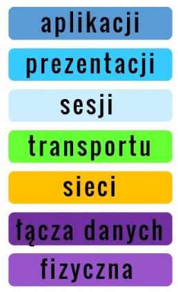

Model OSI
Budowa modelu OSI i opis:

- Na samej górze tego modelu wyróżnić możemy warstwę aplikacji i tutaj tak naprawdę jej funkcję są bardzo podobne do tych z modelu TCP/IP, no bo pozwalają użytkownikom końcowym sieci korzystać z aplikacji sieciowych.
- Dalej mamy warstwę prezentacji, która to przekazuje do warstwy aplikacji informacje o zastosowanym formacie danych, np. informuje jakie typy plików będą przesyłane, odpowiada ona również za odpowiednie zakodowanie danych na urządzeniu źródłowym i ich dekodowanie na urządzeniu docelowym.
- Niżej jest warstwa sesji, zarządzająca sesjami użytkowników korzystających np. ze stron WWW czy komunikacji video.
- Idąc dalej mamy warstwę transportu, czyli ponownie dokładnie to samo co w modelu TCP/IP, zarówno w jednym jak i w drugim przypadku funkcje tej warstwy są dokładnie takie same.
- Następnie mamy warstwę sieci, która jest odpowiednikiem warstwy internetowej modelu TCP/IP czyli znowu bardzo podobne funkcje, takie jak adresowanie i wyznaczanie najlepszej ścieżki przesyłu danych.
- Dalej idąc w dół mamy warstwę łącza danych, której głównym zadaniem jest kontrola dostępu do medium transmisyjnego, a także adresowanie danych, tym razem jednak w celu przesyłania ich pomiędzy hostami w sieci LAN.
- No i na koniec warstwa fizyczna, która koduje dane do postaci czystych bitów (zer i jedynek) i przesyła je poprzez medium transmisyjne do odpowiednich urządzeń.
- Oba modele są do siebie dość podobne. Różnice jakie występują widoczne są w górnych warstwach gdzie w przypadku modelu ISO/OSI dokonano podziału, aż na 3 warstwy, a w przypadku modelu TCP/IP te same funkcje realizowane jest tylko poprzez jedną warstwę. Podobne różnice widać w dolnych warstwach, gdzie w modelu ISO/OSI mamy dwie oddzielne warstwy łącza danych i fizyczną, a w przypadku modelu TCP/IP tylko jedną, warstwę dostępu do sieci.
Źródło